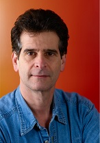

Mission - The mission of FIRST is to inspire young people to be science and technology leaders, by engaging them in exciting mentor-based programs that build science, engineering and technology skills, that inspire innovation, and that foster well-rounded life capabilities including self-confidence, communication, and leadership.
|  | "[FIRST is attempting] to transform our culture by creating a world where science and technology are celebrated and where young people dream of becoming science and technology leaders." Dean Kamen, Founder |